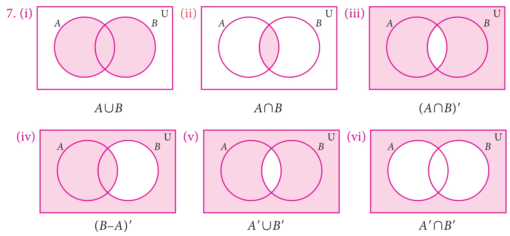

1 Set Language
Exercise 1.1
1. (i) set (ii) not a set (iii) Set (iv) not a set
2. (i) {I, N, D, A} (ii) {P, A, R, L, E, O, G, M} (iii) {M, I, S, P} (iv) {C, Z, E, H, O, S, L, V, A, K, I}
3. (a) (i) True (ii) True (iii) False (iv) True (v) False (vi) False
(b) (i) \(A\) (ii) \(C\) (iii) \(\notin\) (iv) \(\in\)
4. (i) \(A = \{2, 4, 6, 8, 10, 12, 14, 16, 18\}\) (ii) \(B = \left\{\frac{1}{2}, \frac{1}{4}, \frac{1}{6}, \frac{1}{8}, \frac{1}{10}\right\}\)
(iii) \(C = \{64, 125\}\) (iv) \(D = \{-4, -3, -2, -1, 0, 1, 2\}\)
5. (i) \(B = \{x : x\) is an Indian player who scored double centuries in One Day International\(\}\)
(ii) \(C = \left\{x : x = \frac{n}{n+1}, n \in \mathbb{N}\right\}\) (iii) \(D = \{x : x\) is a tamil month in a year\(\}\)
(iv) \(E = \{x : x\) is an odd whole number less than 9\(\}\)
6. (i) \(P =\) The set of English months starting with letter ‘J’
(ii) \(Q =\) The set of Prime numbers between 5 and 31
(iii) \(R =\) The set of natural numbers less than 5
(iv) \(S =\) The set of English consonants
Exercise 1.2
1. (i) \(n(M) = 6\) (ii) \(n(P) = 5\) (iii) \(n(Q) = 3\) (iv) \(n(R) = 10\) (v) \(n(S) = 5\)
2. (i) finite (ii) infinite (iii) infinite (iv) finite
3. (i) Equivalent sets (ii) Unequal sets (iii) Equal sets (iv) Equivalent sets
4. (i) null set (ii) null set (iii) singleton set (iv) null set
5. (i) overlapping (ii) disjoint (iii) overlapping
6. (i) {square, rhombus} (ii) {circle} (iii) {triangle} (iv) { }
7. \(\{\ \}, \{a\}, \{a, b\}, \{a, \{a, b\}\}\)
8. (i) \(\{\{\ \}, \{a\}, \{b\}, \{a, b\}\}\)
(ii) \(\{\{\ \}, \{1\}, \{2\}, \{3\}, \{1, 2\}, \{1, 3\}, \{2, 3\}, \{1, 2, 3\}\}\)
(iii) \(\{\{\ \}, \{p\}, \{q\}, \{r\}, \{s\}, \{p, q\}, \{p, r\}, \{p, s\}, \{q, r\}, \{q, s\}, \{r, s\}, \{p, q, r\}, \{p, q, s\}, \{p, r, s\}, \{q, r, s\}, \{p, q, r, s\}\}\) (iv) \(P(E) = \{\{\ \}\}\)
9. (i) 8, 7 (ii) 1024, 1023
10. (i) 16 (ii) 1 (iii) 8
Exercise 1.3
1. (i) {2, 4, 7, 8, 10} (ii) {3, 4, 6, 7, 9, 11} (iii) {2, 3, 4, 6, 7, 8, 9, 10, 11}
(iv) {4, 7} (v) {2, 8, 10} (vi) {3, 6, 9, 11}
(vii) {1, 3, 6, 9, 11, 12} (viii) {1, 2, 8, 10, 12}
(ix) {1, 2, 3, 4, 6, 7, 8, 9, 10, 11, 12}
2. (i) {2, 5, 6, 10, 14, 16}, {2, 14}, {6, 10}, {5, 16}
(ii) \(\{a, b, c, e, i, o, u\}, \{a, e, u\}, \{b, c\}, \{i, o\}\)
(iii) {0, 1, 2, 3, 4, 5, 6, 7, 8, 9, 10}, {1, 2, 3, 4, 5}, {6, 7, 8, 9, 10,}, {0}
(iv) \(\{m, a, t, h, e, i, c, s, g, o, r, y\}, \{e, m, t,\}, \{a, h, i, c, s\}, \{g, o, r, y\}\)
3. (i) \(\{a, c, e, g\}\) (ii) \(\{b, c, f, g\}\) (iii) \(\{a, b, c, e, f, g\}\) (iv) \(\{c, g\}\) (v) \(\{c, g\}\)
(vi) \(\{a, b, c, e, f, g\}\) (vii) \(\{b, d, f, h\}\) (viii) \(\{a, d, e, h\}\)
4. (i) {0, 2, 4, 6} (ii) {1, 4, 6} (iii) {0, 1, 2, 4, 6} (iv) {4, 6} (v) {4, 6}
(vi) {0, 1, 2, 4, 6} (vii) {1, 3, 5, 7} (viii) {0, 2, 3, 5, 7}
5. (i) {1, 2, 7} (ii) \(\{m, o, p, q, j\}\) (iii) {6, 9, 10}
6. (i) \(Y - X\) (ii) \((X \cup Y)'\) (iii) \((X - Y) \cup (Y - X)\)

(vii) \((A \cap B)' = A' \cup B'\)
Exercise 1.4
1. (i) {1,2,3,4,5,7,9,11} (ii) {2,5} (iii) {3,5}
Exercise 1.5
1. (i) \(\{3, 4, 6\}\) (ii) \(\{-1, 5, 7\}\) (iii) \(\{-3, 0, 1, 2, 3, 4, 5, 6, 7, 8\}\)
(iv) \(\{-3, 0, 1, 2\}\) (v) \(\{1, 2, 4, 6\}\) (vi) \(\{4, 6\}\) (vii) \(\{-1, 3, 4, 6\}\)
2. (i) \(\{a, b, c, d, e, f\}\) (ii) \(\{a, b, d\}\) (iii) \(\{a, b, c, d, e, f\}\) (iv) \(\{a, b, d\}\)
Exercise 1.6
1. (i) 15, 65 (ii) 250, 600 4. (i) 17 (ii) 22 (iii) 47
5. (i) 10 (ii) 10 (iii) 25 6. 1000 7. 8 8. Not correct
9. (i) 185 (ii) 141 (iii) 326 10. 70
11. \(x = 20,\ y = 40,\ z = 30\) 12. (i) 5 (ii) 7 (iii) 8
13. 5
Exercise 1.7
1. (2) 2. (1) 3. (3) 4. (2) 5. (4) 6. (1) 7. (2) 8. (4) 9. (3) 10. (4)
11. (2) 12. (1) 13. (1) 14. (3) 15. (4) 16. (1) 17. (4) 18. (3) 19. (3) 20. (1)
2 Real Numbers
Exercise 2.1
1. D 2. \(-\frac{6}{11}, -\frac{5}{11}, -\frac{4}{11}, \ldots \frac{1}{11}\)
3. (i) \(\frac{9}{40}, \frac{19}{80}, \frac{39}{160}, \frac{79}{320}, \frac{159}{640}\);
The given answer is one of the answers. There can be many more answers
(ii) 0.101, 0.102, ... 0.109
The given answer is one of the answers. There can be many more answers
(iii) \(-\frac{3}{2}, -\frac{5}{4}, -\frac{9}{8}, -\frac{17}{16}, -\frac{33}{32}\)
The given answer is one of the answers. There can be many more answers
Exercise 2.2
1. (i) 0.2857142..., Non terminating and recurring (ii) \(-5.\overline{27}\), Non terminating and recurring
(iii) \(7.\overline{3}\), Non terminating and recurring (iv) 1.635, Terminating
2. \(0.\overline{076923}\), 6 3. \(0.0\overline{303}\), \(2.\overline{15}\)
4. (i) \(\frac{24}{99}\) (ii) \(\frac{2325}{999}\) (iii) \(-\frac{1283}{250}\) (iv) \(\frac{143}{45}\) (v) \(\frac{5681}{330}\) (vi) \(-\frac{190924}{9000}\)
5. (i) Terminating (ii) Terminating (iii) Non terminating (iv) Non terminating
Exercise 2.3
2. (i) 0.301202200222..., 0.301303300333... (ii) 0.8616611666111 ..., 0.8717711777111 ...
(iii) 1.515511555..., 1.616611666...
3. 2.2362, 2.2363
Exercise 2.5
1. (i) \(5^{4}\) (ii) \(5^{-1}\) (iii) \(5^{\frac{1}{2}}\) (iv) \(5^{\frac{3}{2}}\)
2. (i) \(4^{2}\) (ii) \(4^{\frac{3}{2}}\) (iii) \(4^{\frac{5}{2}}\)
3. (i) 7 (ii) 9 (iii) \(\frac{1}{27}\) (iv) \(\frac{25}{16}\)
4. (i) \(5^{\frac{1}{2}}\) (ii) \(7^{\frac{1}{2}}\) (iii) \(7^{\frac{10}{3}}\) (iv) \(10^{\frac{-14}{3}}\)
5. (i) 2 (ii) 3 (iii) 10 (iv) \(\frac{4}{5}\)
Exercise 2.6
1. (i) \(21\sqrt{3}\) (ii) \(3\sqrt[3]{5}\) (iii) \(26\sqrt{3}\) (iv) \(8\sqrt[3]{5}\)
2. (i) \(\sqrt{30}\) (ii) \(\sqrt{5}\) (iii) 30 (iv) \(49a - 25b\) (v) \(\frac{5}{16}\)
3. (i) 1.852 (ii) 23.978
4. (i) \(\sqrt[3]{5} \gt \sqrt[6]{3} \gt \sqrt[9]{4}\) (ii) \(\sqrt{\sqrt{3}} \gt \sqrt[2]{\sqrt[3]{5}} \gt \sqrt[3]{\sqrt[4]{7}}\)
5. (i) yes (ii) yes (iii) yes (iv) yes
6. (i) yes (ii) yes (iii) yes (iv) yes
Exercise 2.7
1. (i) \(\frac{\sqrt{2}}{10}\) (ii) \(\frac{\sqrt{5}}{3}\) (iii) \(\frac{5\sqrt{6}}{6}\) (iv) \(\frac{\sqrt{30}}{2}\)
2. (i) \(\frac{4}{3}(5 + 2\sqrt{6})\) (ii) \(13 - 4\sqrt{6}\) (iii) \(\frac{9 + 4\sqrt{30}}{21}\) (iv) \(-2\sqrt{5}\)
3. \(a = \frac{-4}{3}, b = \frac{11}{3}\) 4. \(x^{2} + \frac{1}{x^{2}} = 18\) 5. 5.414
Exercise 2.8
1. (i) \(5.6943 \times 10^{11}\) (ii) \(2.00057 \times 10^{3}\) (iii) \(6.0 \times 10^{-7}\) (iv) \(9.000002 \times 10^{-4}\)
2. (i) 3459000 (ii) 56780 (iii) 0.0000100005 (iv) 0.0000002530009
3. (i) \(1.44 \times 10^{28}\) (ii) \(8.0 \times 10^{-60}\) (iii) \(2.5 \times 10^{-36}\)
4. (i) \(7.0 \times 10^{9}\) (ii) \(9.4605284 \times 10^{15}\) km (iii) \(9.1093822 \times 10^{-31}\) kg
5. (i) \(1.505 \times 10^{8}\) (ii) \(1.5522 \times 10^{17}\) (iii) \(1.224 \times 10^{7}\) (iv) \(1.9558 \times 10^{-1}\)
Exercise 2.9
1. (4) 2. (3) 3. (2) 4. (1) 5. (4) 6. (2) 7. (2) 8. (2) 9. (4) 10. (1)
11. (4) 12. (4) 13. (3) 14. (2) 15. (2) 16. (3) 17. (2) 18. (4) 19. (2) 20. (3)
3 Algebra
Exercise 3.1
1. (i) not a polynomial (ii) polynomial (iii) not a polynomial
(iv) polynomial (v) polynomial (vi) not a polynomial
2.
| Cooefficient of \(x^{2}\) | Cooefficient of \(x\) | |
|---|---|---|
| (i) | \(\frac{2}{5}\) | \(-3\) |
| (ii) | \(-2\) | \(-\sqrt{7}\) |
| (iii) | \(\pi\) | \(-1\) |
| (iv) | \(\sqrt{3}\) | \(\sqrt{2}\) |
| (v) | 1 | \(-\frac{7}{2}\) |
3. (i) 7 (ii) 4 (iii) 5 (iv) 6 (v) 4
4.
| Descending order | Ascending order | |
|---|---|---|
| (i) | \(\sqrt{7}x^{3} + 6x^{2} + x - 9\) | \(-9 + x + 6x^{2} + \sqrt{7}x^{3}\) |
| (ii) | \(-\frac{7}{2}x^{4} - 5x^{3} + \sqrt{2}x^{2} + x\) | \(x + \sqrt{2}x^{2} - 5x^{3} - \frac{7}{2}x^{4}\) |
| (iii) | \(7x^{3} - \frac{6}{5}x^{2} + 4x - 1\) | \(-1 + 4x - \frac{6}{5}x^{2} + 7x^{3}\) |
| (iv) | \(9y^{4} + \sqrt{5}y^{3} + y^{2} - \frac{7}{3}y - 11\) | \(-11 - \frac{7}{3}y + y^{2} + \sqrt{5}y^{3} + 9y^{4}\) |
5. (i) \(6x^{3} + 6x^{2} - 14x + 17\), 3 (ii) \(7x^{3} + 7x^{2} + 11x - 8\), 3 (iii) \(16x^{4} - 6x^{3} - 5x^{2} + 7x - 6\), 4
6. (i) \(7x^{2} + 8\), 2 (ii) \(-y^{3} + 6y^{2} - 14y + 2\), 3 (iii) \(z^{5} - 6z^{4} - 6z^{2} - 9z + 7\), 5
7. \(x^{3} - 8x^{2} + 11x + 7\) 8. \(2x^{4} - 3x^{3} + 5x^{2} - 5x + 6\)
9. (i) \(6x^{4} + 7x^{3} - 56x^{2} - 63x + 18\), 4 (ii) \(105x^{2} - 33x - 18\), 2 (iii) \(30x^{3} - 77x^{2} + 54x - 7\), 3
10. \(x^{2} + y^{2} + 2xy\), ₹225 11. \(9x^{2} - 4\), 3596 sq. units
12. cubic polynomial or polynomial of degree 3
Exercise 3.2
1. (i) 6 (ii) \(-6\) (iii) 3 2. 1 3. (i) 3 (ii) \(-\frac{5}{2}\) (iii) \(\frac{3}{2}\) (iv) 0 (v) 0 (vi) \(-\frac{b}{a}\)
4. (i) \(\frac{6}{5}\) (ii) \(-3\) (iii) \(-\frac{9}{10}\) (iv) \(\frac{4}{9}\)
6. (i) 2 (ii) 3 (iii) 0 (iv) 1 (v) 1
Exercise 3.3
1. \(p(x)\) is not a multiple of \(g(x)\)
2. (i) Remainder : 0 (ii) Remainder : \(\frac{3}{2}\) (iii) Remainder : 62
3. Remainder : \(-143\) 4. Remainder : 2019 5. \(K = 8\)
6. \(a = -3\), Remainder : 27 7. (i) \((x - 1)\) is a factor (ii) \((x - 1)\) is not a factor
8. \((x - 5)\) is a factor of \(p(x)\) 9. \(m = 10\) 11. \(k = 3\) 12. Yes
Exercise 3.4
1. (i) \(x^{2} + 4y^{2} + 9z^{2} + 4xy + 12yz + 6xz\) (ii) \(p^{2} + 4q^{2} + 9r^{2} - 4pq + 12qr - 6pr\)
(iii) \(8p^{3} - 24p^{2} - 14p + 60\) (iv) \(27a^{3} + 27a^{2} - 18a - 8\)
2. (i) 18, 107, 210 (ii) \(-32, -6, +90\)
3. (i) 14 (ii) \(\frac{59}{70}\) (iii) 78 (iv) \(\frac{78}{70}\)
4. (i) \(27a^{3} - 64b^{3} - 108a^{2}b + 144ab^{2}\) (ii) \(x^{3} + \frac{1}{y^{3}} + \frac{3x^{2}}{y} + \frac{3x}{y^{2}}\)
5. (i) 941192 (ii) 1003003001
6. 29 7. 280 8. 335 9. 198 10. \(\pm 5, \pm 110\)
11. 36 12. (i) \(8a^{3} + 27b^{3} + 64c^{3} - 72abc\) (ii) \(x^{3} - 8y^{3} + 27z^{3} + 18xyz\)
13. (i) \(-630\) (ii) \(\frac{-9}{4}\)
14. 72xyz
Exercise 3.5
1. (i) \(2a^{2}(1 + 2b + 4c)\) (ii) \((a - m)(b - c)\)
2. (i) \((x + 2)^{2}\) (ii) \(3(a - 4b)^{2}\)
(iii) \(x(x + 2)(x - 2)(x^{2} + 4)\) (iv) \(\left(m + \frac{1}{m} + 5\right)\left(m + \frac{1}{m} - 5\right)\)
(v) \(6(1 + 6x)(1 - 6x)\) (vi) \(\left(a - \frac{1}{a} + 4\right)\left(a - \frac{1}{a} - 4\right)\)
3. (i) \((2x + 3y + 5z)^{2}\)
(ii) \((-5x + 2y + 3z)^{2}\) (or) \((5x - 2y - 3z)^{2}\)
4. (i) \((2x + 5y)(4x^{2} - 10xy + 25y^{2})\)
(ii) \((3x - 2y)(9x^{2} + 6xy + 4y^{2})\)
(iii) \((a + 2)(a - 2)(a^{2} + 4 - 2a)(a^{2} + 4 + 2a)\)
5. (i) \((x + 2y - 1)(x^{2} + 4y^{2} + 1 - 2xy + 2y + x)\)
(ii) \((l - 2m - 3n)(l^{2} + 4m^{2} + 9n^{2} + 2lm - 6mn + 3ln)\)
Exercise 3.6
1. (i) \((x + 6)(x + 4)\)
(ii) \((z + 6)(z - 2)\)
(iii) \((p - 8)(p + 2)\)
(iv) \((t - 9)(t - 8)\)
(v) \((y - 20)(y + 4)\)
(vi) \((a + 30)(a - 20)\)
2. (i) \((2a + 5)(a + 2)\)
(ii) \((x - 7y)(5x + 6y)\) (iii) \((2x - 3)(4x - 3)\) (iv) \(2(3x + 2y)(x + 2y)\)
(v) \(3x^{2}(3y + 2)^{2}\) (vi) \((a + b + 6)(a + b + 3)\)
3. (i) \((p - q - 8)(p - q + 2)\)
(ii) \((m + 6n)(m - 4n)\) (iii) \(\left(a + \sqrt{5}\right)\left(\sqrt{5}a - 3\right)\) (iv) \((a + 1)(a - 1)(a^{2} - 2)\)
(v) \(m(4m + 5n)(2m - 3n)\)
(vi) \(\left(\frac{1}{x} + \frac{1}{y}\right)^{2}\)
Exercise 3.7
1. (i) Quotient : \(4x^{2} - 6x - 5\), Remainder : 33 (ii) Quotient : \(4y^{2} - 6y + 5\), Remainder : \(-10\)
(iii) Quotient : \(4x^{2} + 2x + 1\), Remainder : 0 (iv) Quotient : \(8z^{2} - 6z + 2\), Remainder : 10
2. Length : \(x + 4\) 3. Height : \(5x - 4\) 4. Mean : \(x^{2} - 5x + 25\)
5. (i) \(x^{2} + 4x + 5\), 12 (ii) \((x^{2} - 1), -2\)
(iii) \(3x^{2} - 11x + 40, -125\) (iv) \(2x^{3} - \frac{x^{2}}{2} - \frac{3x}{8} + \frac{51}{32}, \frac{109}{32}\)
6. \(4x^{3} - 2x^{2} + 3,\ p = -2,\ q = 0,\) remainder \(= -10\)
7. \(a = 20,\ b = 94\) & remainder = 388
Exercise 3.8
1. (i) \((x - 2)(x + 3)(x - 4)\) (ii) \((x + 1)(x - 2)(2x - 1)\)
(iii) \((x - 1)(2x - 1)(2x + 3)\) (iv) \((x + 2)(x + 3)(x - 4)\)
(v) \((x - 1)(x - 2)(x + 3)\) (vi) \((x - 1)(x - 10)(x + 1)\)
Exercise 3.9
1. (i) \(p^{5}\) (ii) 1 (iii) \(3a^{2}b^{2}c^{3}\) (iv) \(16x^{6}\)
(v) abc (vi) \(7xyz^{2}\) (vii) 25ab (viii) 1
2. (i) 1 (ii) \(a^{m+1}\) (iii) \((2a + 1)\) (iv) 1
(v) \((x + 1)(x - 1)\) (vi) \((a - 3x)\)
Exercise 3.10
2. (i) (5,2) (ii) Infinite number of solutions (iii) no solution
(iv) \((-3, -3)\) (v) (1,3) (vi) \((-3, 3)\)
3. 75km/hr, 25km/hr
Exercise 3.11
1. (i) \((2, -1)\) (ii) (4,2) (iii) (40,100) (iv) \(\left(\sqrt{8}, \sqrt{3}\right)\)
(2) 45 (3) 409
Exercise 3.12
1. (i) (2,1) (ii) (7,2) (iii) (80,30) (iv) \(\left(1, \frac{3}{2}\right)\)
(v) \(\left(\frac{1}{3}, -1\right)\) (vi) (2,4) (2) ₹30000, ₹40000 (3) 75, 15
Exercise 3.13
1. (i) (3,4) (ii) \((3, -1)\) (iii) \(\left(-\frac{1}{2}, \frac{1}{3}\right)\)
(2) Number of 2 rupee coins 60; Number of 5 rupee coins 20
(3) Larger pipe 40 hours; Smaller pipe 60 hours
Exercise 3.14
1. 64
2. \(\frac{5}{7}\)
3. \(\angle A = 120^{\circ},\ \angle B = 70^{\circ},\ \angle C = 60^{\circ},\ \angle D = 110^{\circ}\)
4. Price of TV = ₹20000; Price of fridge = ₹10000
5. 40, 48
6. 1 Indian – 18 days; 1 Chinese – 36 days
Exercise 3.15
1. (4) 2. (3) 3. (4) 4. (4) 5. (2) 6. (1) 7. (4) 8. (4) 9. (4) 10. (3)
11. (2) 12. (3) 13. (3) 14. (2) 15. (3) 16. (3) 17. (4) 18. (2) 19. (3) 20. (2)
21. (4) 22. (3) 23. (2) 24. (1) 25. (2) 26. (3) 27. (1) 28. (3) 29. (2)
4 Geometry
Exercise 4.1
1. (i) \(70^{\circ}\) (ii) \(288^{\circ}\) (iii) \(89^{\circ}\) 2. \(30^{\circ}, 60^{\circ}, 90^{\circ}\) 5. \(80^{\circ}, 85^{\circ}, 15^{\circ}\)
Exercise 4.2
1. (i) \(40^{\circ}, 80^{\circ}, 100^{\circ}, 140^{\circ}\) 2. \(62^{\circ}, 114^{\circ}, 66^{\circ}\) 3. \(44^{\circ}\) 4. 10cm
7. (i) \(30^{\circ}\) (ii) \(105^{\circ}\) (iii) \(75^{\circ}\) (iv) \(105^{\circ}\) 8. \(122^{\circ}, 29^{\circ}\)
9. Ratios are equal 10. d = 7.6
Exercise 4.3
1. 24cm 2. 17cm 3. 8cm, \(45^{\circ}, 45^{\circ}\)
4. 18cm 5. 14 cm 6. 6 cm
7. (i) \(45^{\circ}\) (ii) \(10^{\circ}\) (iii) \(55^{\circ}\) (iv) \(120^{\circ}\) (v) \(60^{\circ}\)
8. \(\angle BDC = 25^{\circ}, \angle DBA = 65^{\circ}, \angle COB = 50^{\circ}\)
Exercise 4.4
1. \(30^{\circ}\) 2. (i) \(\angle ACD = 55^{\circ}\) (ii) \(\angle ACB = 50^{\circ}\) (iii) \(\angle DAE = 25^{\circ}\)
3. \(\angle A = 64^{\circ};\ \angle B = 80^{\circ};\ \angle C = 116^{\circ};\ \angle D = 100^{\circ}\)
4. (i) \(\angle CAD = 40^{\circ}\) (ii) \(\angle BCD = 80^{\circ}\) 5. Radius=5cm 6. 3.25m
7. \(\angle OAC = 30^{\circ}\) 8. 5.6m 9. \(\angle RPO = 60^{\circ}\)
Exercise 4.7
1. (2) 2. (3) 3. (1) 4. (4) 5. (4) 6. (3) 7. (2) 8. (2) 9. (4) 10. (2)
11. (3) 12. (3) 13. (1) 14. (1) 15. (4) 16. (2) 17. (2) 18. (3) 19. (2) 20. (4)
5 Coordinate Geometry
Exercise 5.1
1. \(P(-7, 6) =\) II Quadrant; \(Q(7, -2) =\) IV Quadrant; \(R(-6, -7) =\) III Quadrant; \(S(3, 5) =\) I Quadrant; and \(T(3, 9) =\) I Quadrant
2. (i) \(P = (-4, 4)\) (ii) \(Q = (3, 3)\) (iii) \(R = (4, -2)\) (iv) \(S = (-5, -3)\)
3. (i) Straight line parallel to \(x\)-axis (ii) Straight line which lie on \(y\)-axis.
4. (i) Square (ii) Trapezium
Exercise 5.2
1. (i) \(\sqrt{10}\) units (ii) \(2\sqrt{26}\) units (iii) \(c - a\) (iv) 13 units
2. (i) Collinear (ii) Collinear 7. 5 or 1
8. Coordinates of A (9, 9) or \((-5, -5)\) 9. \(y = 4x + 9\) 10. Coordinates of \(P(2, 0)\)
12. \(30\sqrt{2}\)
Exercise 5.3
1. (i) \((-4, -1)\) (ii) \((0, -1)\) (iii) \((a + b, a)\) (iv) \((1, -1)\)
2. \((-5, -3)\) 3. \(P = -15\) 4. \((9, 3)(-5, 5)\) and \((1, 1)\)
5. \(\left(\frac{9}{2}, \frac{3}{2}\right)\) 6. \((1, 8)\)
Exercise 5.4
1. (7, 3) 2. 5:2 3. (3, 4)
4. \((-2, 3), (1, 0)\) 5. \(\left(\frac{19}{2}, \frac{13}{2}\right), \left(\frac{-9}{2}, \frac{-15}{2}\right)\) 7. (3, 2)
Exercise 5.5
1. (i) \((2, -3)\) (ii) \(\left(\frac{-8}{3}, \frac{-11}{3}\right)\) 2. \((4, -6)\) 3. 5 units
4. 20 5. \(3\sqrt{\frac{5}{2}}\) units 6. (1, 0) 7. \((5, -2)\)
Exercise 5.6
1. (3) 2. (3) 3. (3) 4. (2) 5. (2) 6. (4) 7. (3) 8. (3) 9. (3) 10. (3)
11. (4) 12. (1) 13. (3) 14. (4) 15. (2) 16. (3) 17. (2) 18. (2) 19. (4) 20. (2)
6 Trigonometry
Exercise 6.1
1. \(\sin B = \frac{9}{41};\ \cos B = \frac{40}{41};\ \tan B = \frac{9}{40};\ \text{cosec}\,B = \frac{41}{9};\ \sec B = \frac{41}{40};\ \cot B = \frac{40}{9}\)
2. (i) \(\sin B = \frac{12}{13}\) (ii) \(\sec B = \frac{13}{5}\) (iii) \(\cot B = \frac{5}{12}\) (iv) \(\cos C = \frac{4}{5}\)
(v) \(\tan C = \frac{3}{4}\) (vi) \(\text{cosec}\,C = \frac{5}{3}\)
3. \(\sin\theta = \frac{1}{2};\ \cos\theta = \frac{\sqrt{3}}{2};\ \tan\theta = \frac{1}{\sqrt{3}};\ \text{cosec}\,\theta = \frac{2}{1};\ \sec\theta = \frac{2}{\sqrt{3}};\ \cot\theta = \sqrt{3}\)
4. \(\frac{3}{40}\) 5. \(\sin A = \frac{1 - x^{2}}{1 + x^{2}};\ \tan A = \frac{1 - x^{2}}{2x}\) 7. \(\frac{1}{2}\)
8. \(\frac{1}{2}\) 9. \(\sin\alpha = \frac{4}{5};\ \cos\beta = \frac{4}{5};\ \tan\phi = \frac{4}{3}\) 10. 7m
Exercise 6.2
2. (i) 0 (ii) \(\frac{7}{4}\) (iii) 3 4. 2
Exercise 6.3
1. (i) 1 (ii) 1 (iii) 1 (iv) 2
Exercise 6.4
1. (i) 0.7547 (ii) 0.2648 (iii) 1.3985 (iv) 0.3641
(v) 0.8302 (vi) 2.7907 2. (i) \(85^{\circ}57'\) (or) \(85^{\circ}58'\) (or) \(85^{\circ}59'\)
(ii) \(47^{\circ}27'\) (iii) \(4^{\circ}7'\) (iv) \(87^{\circ}39'\) (v) \(82^{\circ}30'\)
3. (i) 1.9970 (ii) 2.8659 4. 18.81 cm\(^{2}\) 5. \(36^{\circ}52'\)
6. 54.02 m
Exercise 6.5
1. (1) 2. (2) 3. (2) 4. (3) 5. (2) 6. (3) 7. (3) 8. (1) 9. (2) 10. (2)
7 Mensuration
Exercise 7.1
1. (i) 120 cm\(^{2}\) (ii) 7.2 m\(^{2}\) 2. 1320 m\(^{2}\), ₹26400 3. 12000 m\(^{2}\)
4. 1558.8 cm\(^{2}\) 5. ₹ 1050 6. 240 cm\(^{2}\) 7. 138 cm\(^{2}\)
8. 354 m\(^{2}\) 9. 1536 m\(^{2}\) 10. 672 m\(^{2}\)
Exercise 7.2
1. 1160 cm\(^{2}\), 560 cm\(^{2}\) 2. ₹1716 3. ₹3349
4. (i) 384 m\(^{2}\), 256 m\(^{2}\) (ii) 2646 cm\(^{2}\), 1764 cm\(^{2}\) (iii) 337.5 cm\(^{2}\), 225 cm\(^{2}\)
5. 1600 cm\(^{2}\) 6. 253.50 m\(^{2}\), ₹6084 7. 224 cm\(^{2}\), 128 cm\(^{2}\)
Exercise 7.3
1. (i) 576 cm\(^{3}\) (ii) 2250 m\(^{3}\) 2. 630 cm\(^{3}\)
3. 25 cm, 20 cm, 15 cm 4. 2624000 litres 5. 25000
6. 12 m 7. (i) 125 cm\(^{3}\) (ii) 42.875 m\(^{3}\) (iii) 9261 cm\(^{3}\)
8. 5 m 9. 15 cm
Exercise 7.4
1. (3) 2. (2) 3. (4) 4. (3) 5. (3) 6. (1) 7. (2) 8. (3) 9. (4) 10. (1)
8 Statistics
Exercise 8.1
1. \(27^{\circ}\)C 2. 44kg 3. 56.96 (or) 57 (approximately)
4. 142.5 mm\(^{3}\) 5. \(p = 20\) 6. 40.2 7. 29.29 8. 29.05
Exercise 8.2
1. 47 2. 44 3. 21 4. 32
5. 31 6. 38
Exercise 8.3
1. 6600, 7000, 7000 2. 3.1 and 3.3 (bimodal) 3. 15
4. 40 5. 24 6. 58.5
Exercise 8.4
1. (1) 2. (3) 3. (3) 4. (2) 5. (1) 6. (4) 7. (1) 8. (2) 9. (2) 10. (3)
9 Probability
Exercise 9.1
1. \(\frac{1}{7}\) 2. \(\frac{3}{13}\) 3. \(\frac{1}{2}\) 4. (i) \(\frac{5}{24}\)
(ii) \(\frac{1}{8}\) (iii) \(\frac{2}{3}\) 5. \(\frac{1}{4}\) 6. (i) 0
(ii) \(\frac{1}{12}\) (iii) 1 7. \(\frac{1}{280}\) 8. \(\frac{1}{5}\)
9. \(\frac{3}{4}\)
Exercise 9.2
1. 0.9975 2. \(\frac{209}{400}\) 3. \(\frac{15}{8}\) 4. 0.28
5. (i) \(\frac{1}{6}\) (ii) \(\frac{43}{75}\) (iii) \(\frac{1}{75}\)
Exercise 9.3
1. (4) 2. (2) 3. (1) 4. (4) 5. (1) 6. (4) 7. (4) 8. (4) 9. (1) 10. (2)


Secondary Mathematics - Class 9
Text Book Development Team
Reviewers
- Dr. R. Ramanujam, Professor, Institute of Mathematical Sciences, Taramani, Chennai.
- Dr. Aaloka Kanhere Assistant Professor, Homi Bhabha Centre for Science Education, Mumbai.
- R. Athmaraman, Mathematics Educational Consultant, Association of Mathematics Teachers of India, Chennai -05
Domain Expert
- Dr. K. Kumarasamy, Associate Professor, R.K.M. Vivekanandha college, Chennai.
- Dr. T. Thulasiram, Associate Professor, A.M. Jain college, Chennai.
Academic Coordinator
- B. Tamilselvi, Deputy Director, SCERT, Chennai.
Coordinator
- E. Rajkamal Junior Lecturer, SCERT, Chennai – 06
- V.P. Sumathi B.T. Asst., TEM Govt. (G) HSS Sholinghur, Vellore.
Content Writers
- P.Padmanaban, Lecturer, DIET, Kilpennathur, Tiruvannamalai Dt.
- K.S.A Mohamed Yousuf Jainulabudeen, B.T. Asst, Manbaul Uloom HSS, Fort, Coimbatore.
- A.Senthil Kumar B.T. Asst, GHSS, Thiruthuraiyur, Cuddalore Dt.
- H. Shanawas, B.T. Asst, Model School, Karimangalam, Dharmapuri.
- K.P. Ganesh, B.T. Asst, Avvaiyar GGHSS, Dharmapuri
- N. Venkatraman, PGT, Sri Gopal Naidu HSS, Peelamedu, Coimbatore.
- P. Karuppasamy, B.T. Asst Govt. ADW High School, Idayankulam, Virudhunagar Dt.
- N.P. Sivakumar, PGT, Sir M Venkata Subba Rao MHSS, T. Nagar, Chennai.
- S. Sudhakar, B.T.Asst, JG Garodia National HSS, Tambaram(E).
- Rani Desikan, PGT, E.O Jaigopal Garodia Hindu Vidyalaya, West Mambalam, Chennai
- R. Ragothaman, B.T. Asst, GHSS, Theethipalayam, Coimbatore.
- N. Kalavalli, Headmistress, VSA GHS, Uthukkadu, Kancheepuram Dt.
- M. Thiruvengadathan, B.T. Asst, Sethupathi HSS, Madurai.
- S. M. Mani, B.T.Asst, GHSS, Thirukandalam, Tiruvallur Dt.
- C. Kirubavathy, B.T.Asst, ORGN GBHSS, Redhills, Tiruvallur Dt.
- K. Krishna Kumar, B.T.Asst, GHS, Egattur, Tiruvallur Dt.
Content Readers
- Dr. M.P. Jeyaraman, Asst. Professor, L.N. Govt College, Ponneri – 601 204
- Dr. K. Kavitha Asst. Professor, Bharathi Women’s College, Chennai - 601108
- Dr. N. Geetha, Assistant Professor in Mathematics, Quaid-e-Millath Govt College for Women, Chennai
- C. Shobana sharma Assistant Professor Bharathi womens college chennai
Content Reader’s Coordinator
- S. Vijayalakshmi, B.T. Asst., GHSS, Koovathur, Kanchipuram.
ICT Coordinators
- D. Vasu Raj, B.T. Asst (Retd), Kosappur, Puzhal Block, Tiruvallur
- Sankar K B.T. Assistant., GHSS., Vellore
QR Management Team
- R. Jaganathan , SGT, PUMS - Ganesapuram, Polur , Thiruvannamalai.
- M. Saravanan, B.T, G.G.H.S.S, Puthupalayam, Vazhapadi, Salem.
- A. Devi Jesintha, B.T, G.H.S, N.M.kovil, Vellore.
Art and Design Team
Illustration
- Shanmugam B Art Teacher, PUMS, Thirumalai Kuppam, Madhanur Block, Vellore Dt. Art Teachers, Government of Tamil Nadu. Students, Government College of Fine Arts, Chennai & Kumbakonam.
Layout Artist
- Joy Graphics, Chintadripet, Chennai - 02
- Mathan Raj R
In-House QC
- Jerald wilson C
- Rajesh Thangappan
- Arun Kamaraj P
Co-ordination
- Ramesh Munisamy
Typist
- A. Palanivel, Typist, SCERT, Chennai.
- Kanimozhi T Computer Teacher, GBHSS, SSA, Avadi.
This book has been printed on 80 GSM Elegant Maplitho paper
Printed by offset at :